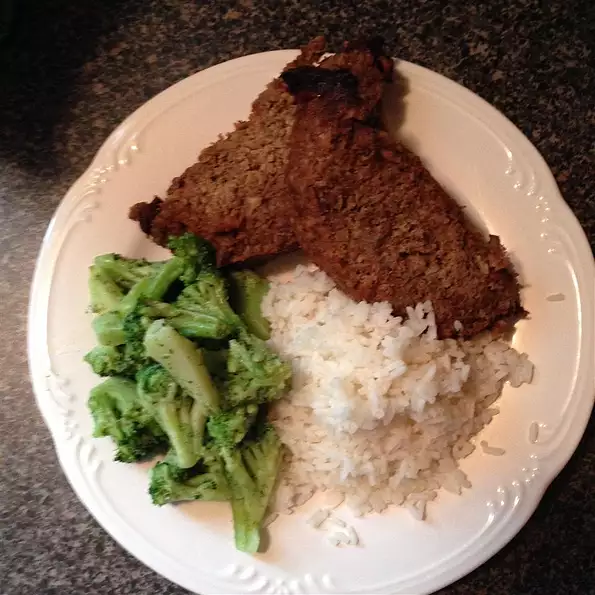

Meat Loaf

A plate of prepared meat loaf
An instant classic and all-around hearty meal, this quick and easy recipe
will keep you satiated.
Ingredients
- 1 pound ground beef
- 1.5 cups rolled oats
- 1 (10 ounce) can French onion soup (such as Campbells®
- 2 eggs, beaten
Directions
- Preheat oven to 375 degrees F (190 degrees C). Grease an 8-inch square baking dish.
- Combine ground beef, rolled oats, French onion soup, and eggs in a bowl until thoroughly combined;
transfer to prepared baking dish.
- Bake in the preheated oven until the meat loaf is no longer pink in the middle and an instant-read meat
thermometer inserted into the center of the loaf reads at least 160 degrees F (70 degrees C), 60 to 75 minutes.